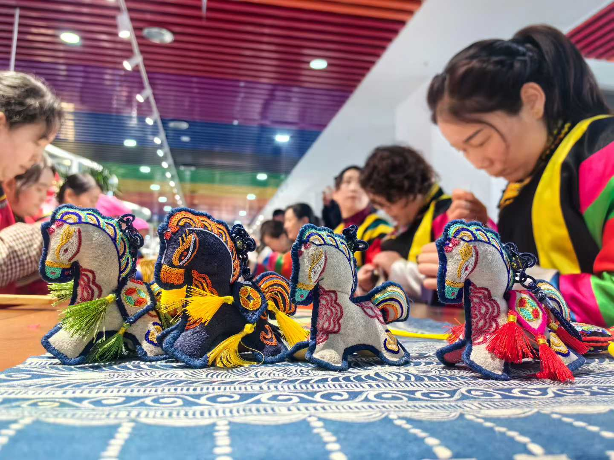
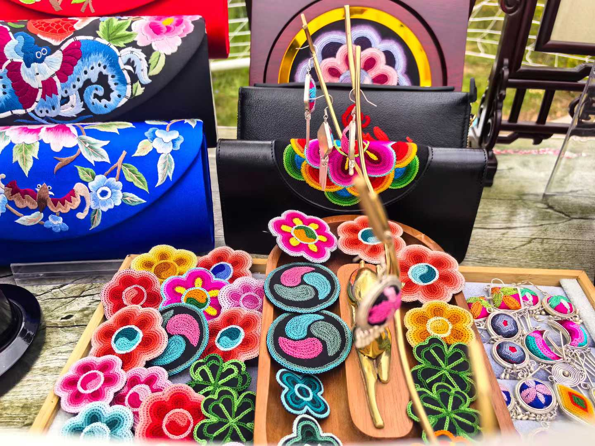
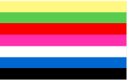

盘绣介绍

土族盘绣，青海省互助县土族民间传统美术，国家非物质文化遗产之一。
土族盘绣艺术主要流传在青海互助县东沟、东山、五十、松多、丹麻等乡镇。在青海省都兰县发掘的土族先祖吐谷浑墓葬中，就出土有类似盘绣的绣品，由此可知，4世纪左右盘绣工艺已经出现。盘绣用料考究，加工精细，以黑色纯棉布做底料，再选面料贴上。盘绣是丝线绣，有红、黄、绿、 蓝、紫、白等颜色，绣线细如发丝，绣工精细，图案生动，色彩艳丽。盘绣的图案以花卉、动物、人物、宗教等为主，具有浓郁的民族特色和艺术魅力。
2006年5月20日，土族盘绣经国务院批准列入第三批国家级非物质文化遗产名录，项目编号为VII-24。